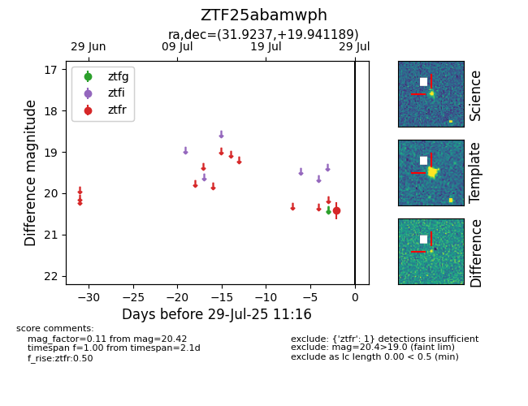

Target ZTF25abamwph at 2025-07-29 11:16, see:
FINK: fink-portal.org/ZTF25abamwph
Lasair: lasair-ztf.lsst.ac.uk/objects/ZTF25abamwph
ALeRCE: alerce.online/object/ZTF25abamwph
alt names
ZTF25abamwph (ztf,fink)
coordinates:
equatorial (ra, dec) = (31.9237,+19.94119)
galactic (l, b) = (146.3575,-39.43667)
photometry
last ztfr=20.42
1 ztfr detections
